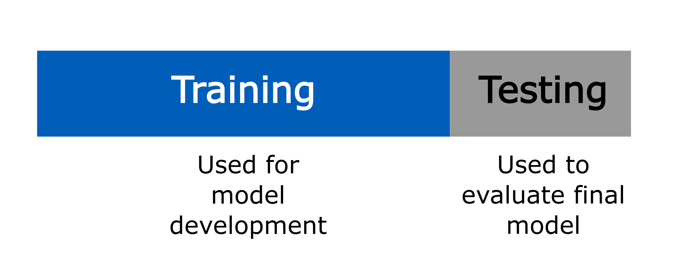
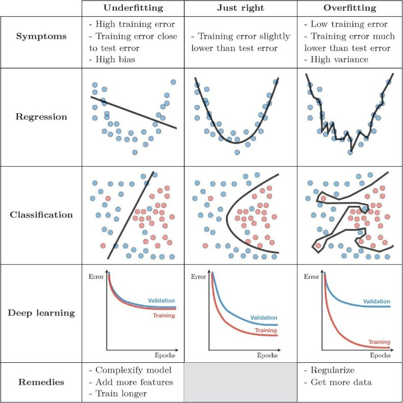
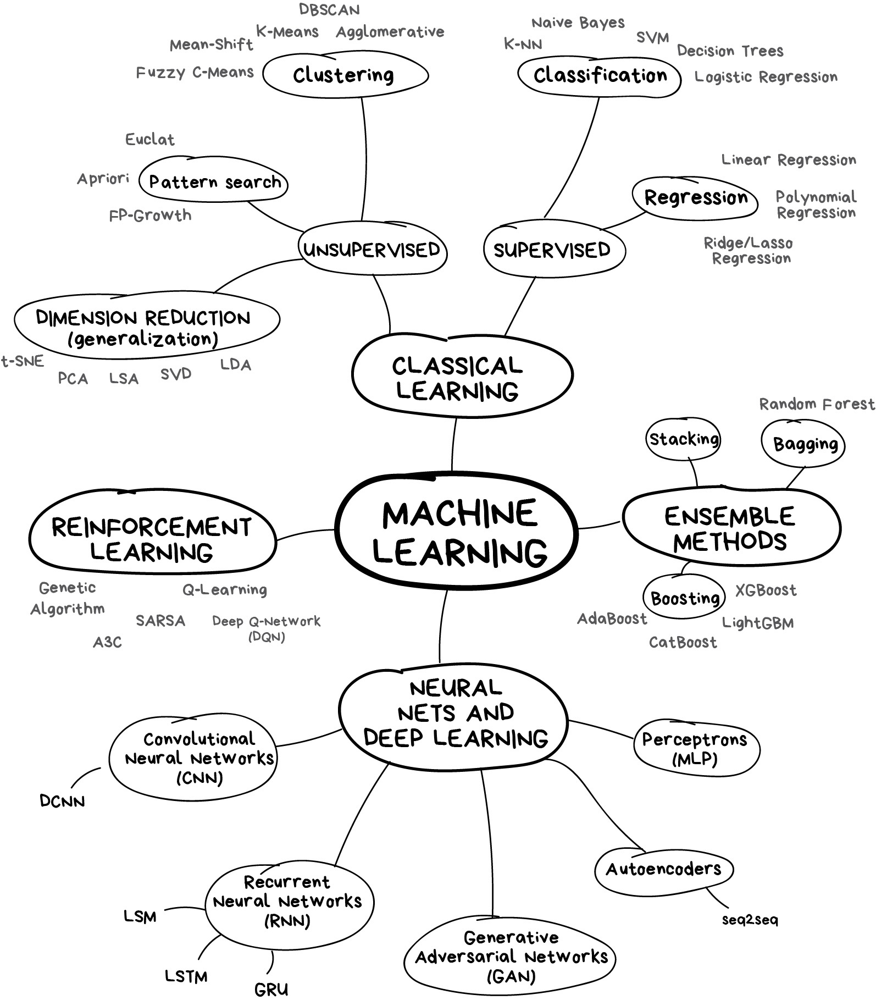
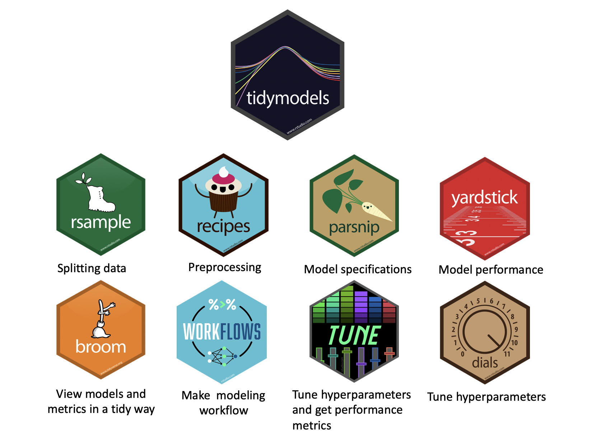
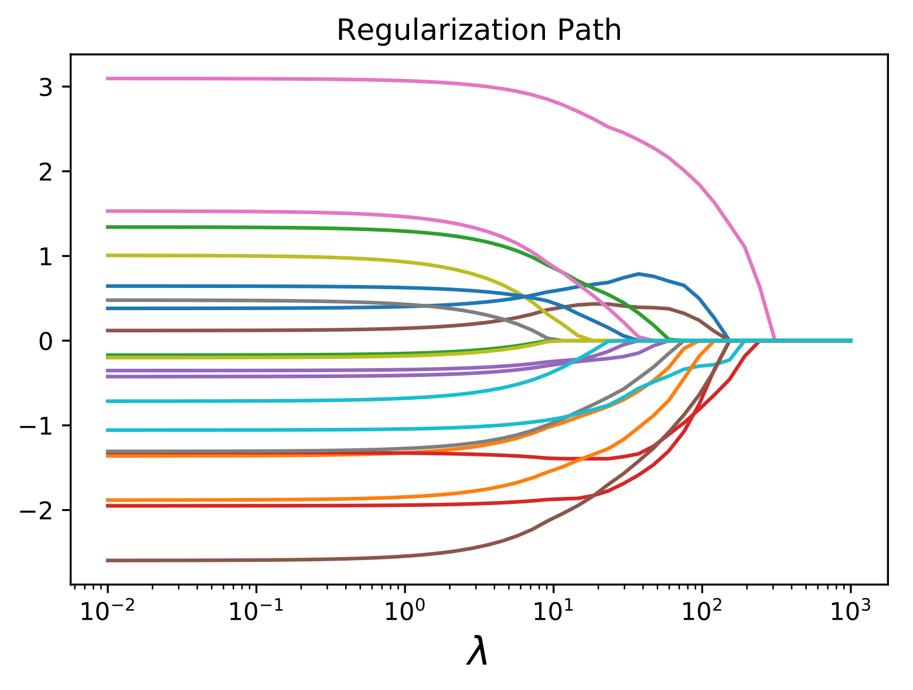
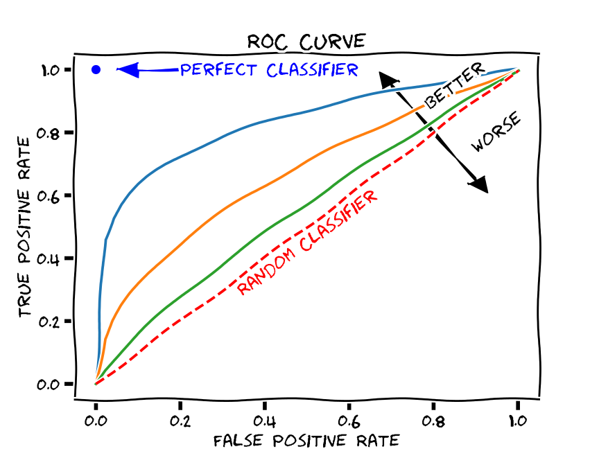
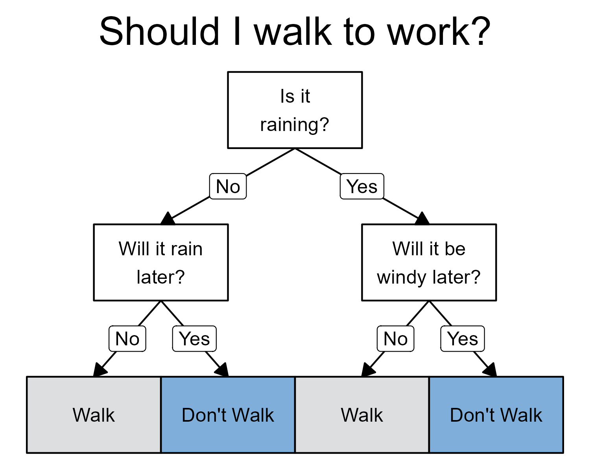
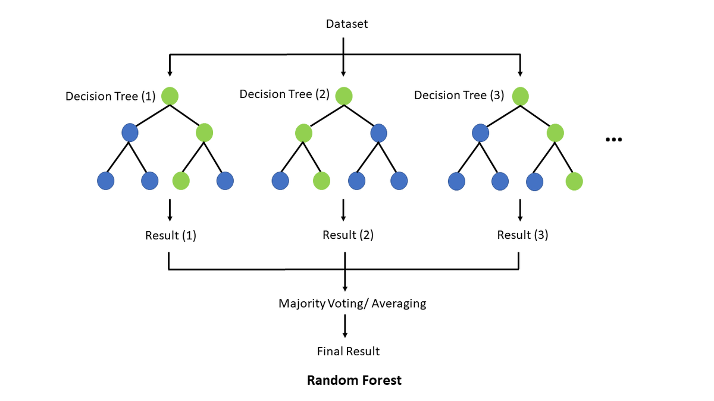

Introduction to Health Analytics
Introduction to Machine Learning for Health Analytics
Dr. Sam Burn
Today
- What is machine learning
- The problem of overfitting
- Typology of machine learning techniques
- Predicting breast cancer diagnosis with Lasso and Random Forests
What is machine learning?
AI is the broad field of creating computer systems that perform tasks normally requiring human intelligence. These tasks include:
- perception (e.g., recognizing images or speech)
- reasoning and problem solving
- understanding language
- decision-making
Machine learning is a subset of AI that focuses on systems that learn patterns from data
- training: learn from existing data
- prediction: use what was learned to make decisions on new data
Uses of AI in health analytics
AI is used across the healthcare system to:
Predict outcomes: e.g. complications, readmissions, mortality
Support diagnosis e.g. image interpretation, risk scoring
Personalise treatment matching patients to therapies
Improve operations: scheduling, staffing, capacity planning
Examples of AI tools used in healthcare
| Tool | Used for | Used by |
|---|---|---|
| Aidoc | Facilitating early disease detection and minimizing diagnostic errors | Hospitals |
| Shift Technology | Streamlining claims processing and fraud detection | Insurance companies |
| Atomwise | Identifying potential drug candidates and predicting their efficacy | Drug development |
| BenevolentAI | Decreasing the time and expense associated with bringing new treatments to market | Drug development |
| Digital Diagnostics | Detecting conditions such as diabetic retinopathy and skin cancer from medical images | Diagnostics |
| PathAI | Achieving results comparable to those of experienced clinicians in diagnostics | Diagnostics |
| Qventus | Enhancing operational efficiency using AI-powered predictive analytics | Healthcare facilities |
| LeanTaaS | Optimizing resource allocation and reducing operational costs | Healthcare facilities |
Source: DataCamp, “AI in Healthcare”
https://www.datacamp.com/blog/ai-in-healthcare
What is the goal of machine learning?
- Machine learning is not defined by the type of model used but by the goal
- Use data to learn a rule that predicts an outcome for new observations!
- At its core, machine learning is about learning a function
- Given data \((X, Y)\), we want to learn a rule \(f(X)\) that maps inputs \(X\) to outcomes \(Y\).
- The goal is to choose \(f(X)\) so that predictions are accurate for new, unseen data
- Many different functions can fit the observed data!
- Machine learning is about choosing between them!
Training and testing data

The problem of overfitting

Source: Wonseok Shin
{kind=link}
Machine learning methods

A basic typology of machine learning methods
- Different ML methods are different ways of restricting and choosing the function \(\widehat f(X)\)
- Regression + regularisation: e.g. LASSO, ridge
- Start with a standard regression model with many variables (linear, logit)
- Regularisation shrinks or constrains coefficients in the model to prevent overfitting
- Tree-based methods: e.g. random forests
- Build the relationship using a sequence of data-driven splits in \(X\)
- Capture nonlinearities and interactions without specifying them in advance
- Average across trees and constrain depth of trees to prevent overfitting
- Neural networks: e.g. convolutional NNs, large language models
- Construct the relationship through “layers” of nonlinear transformations
- Overfitting controlled by constraining the complexity of the function
- especially useful with high-dimensional or unstructured inputs (free text, images, audio)
A note on terminology
- Feature: a component of \(X\) (or a transformation or function of it) used to predict \(Y\)
- Loss: how we measure prediction error (e.g. squared error, log loss)
- Model: the class of functions considered
- Algorithm: the procedure used to fit the model
Machine learning in R: {tidymodels}
A collection of R packages for statistical modelling and machine learning.
Follows the {tidyverse} principles.
install.packages("tidymodels")

Recipe and workflow

- Recipe: A series of preprocessing steps applied to the data before fitting a model, such as:
- Creating dummy variables for categorical predictors
- Normalizing or transforming numeric variables
- Handling missing values
- Creating interactions or derived features
- Creating dummy variables for categorical predictors
- Workflow: An object that bundles all steps of the modelling process, including:
- Pre-processing (the
recipe)
- The model specification
- Post-processing (e.g. predictions, performance metrics)
- Pre-processing (the
- Workflows ensure the same steps are applied consistently during training, validation, and prediction.
Exercise: Exploratory data analysis and standard logit
Open
health_analytics_09_ml.Rmdfor prompts.Load the data Read in the
bdiag.csvdataExplore the data
Inspect variables, plot correlations between different variablesEstimate a vanilla logit
Look at what goes wrong!
LASSO regression
Linear and logistic regression models
LASSO regression
LASSO regression
Standard regression: chooses \(\beta\) coefficients to minimize prediction error
Least Absolute Shrinkage and Selection Operator (LASSO): adds a penalty for using large or many coefficients: \[ \min_{\beta} \; \text{Loss}(\beta) \;+\; \lambda \sum_j |\beta_j| \]
Loss function depends on model choice:
- Linear regression: sum of squared residuals (SSR)
- Logistic regression: negative log-likelihood
- Linear regression: sum of squared residuals (SSR)
Key difference
- Regression focuses only on fit
- LASSO trades off fit against model simplicity
- Larger \(\lambda\) pushes more coefficients towards zero
- \(\lambda\) is a hyperparameter
- Regression focuses only on fit

Source: cvxpy.org/examples/machine_learning/lasso_regression.html
Hyperparameters
Some parts of a model are not learned directly from the data.
Model parameters (e.g. coefficients \(\beta\))
→ estimated during trainingHyperparameters (e.g. \(\lambda\) in LASSO)
→ chosen by the researcher → usually try out a variety of values and test their performance using `cross-validation’ on different splits of the training data → control how the model learnsHyperparameters affect model complexity and overfitting!
Evaluating model fit
Evaluating model fit
- In the exercise, we’ll fit many logistic LASSO models (different values of \(\lambda\)).
- To choose the “best” one, we need a way to judge predictive performance.
- Two common approaches:
- Confusion matrix
- ROC AUC
Confusion matrix
| Predicted 1 | Predicted 0 | |
|---|---|---|
| Actual 1 | True Positive (TP) | False Negative (FN) |
| Actual 0 | False Positive (FP) | True Negative (TN) |
- A classification model outputs predicted probabilities.
- To create a confusion matrix, we choose a cutoff (threshold):
- Predict 1 if predicted probability \(\geq\) threshold
- Predict 0 otherwise
- Predict 1 if predicted probability \(\geq\) threshold
- A confusion matrix summarizes predictions at a single threshold (e.g. 0.5).
- Accuracy \(= \frac{TP + TN}{TP+TN+FP+FN}\)
The limitation of confusion matrices
- A confusion matrix depends on choosing a threshold to turn probabilities into classes.
- Example: If \(\hat p_i > 0.5\), predict “1”; otherwise “0”.
- But different thresholds give different confusion matrices, and therefore different accuracy
- How do we evaluate a model without committing to one arbitrary threshold?
ROC curve: performance across thresholds

Source: Martin Thoma (Wikipedia)
{kind=link}
- The ROC curve varies the threshold from 0 to 1 and plots:
- True Positive Rate (TPR / sensitivity)
\[ TPR = \frac{TP}{TP+FN} \] - False Positive Rate (FPR)
\[ FPR = \frac{FP}{FP+TN} \]
- True Positive Rate (TPR / sensitivity)
- Each threshold \(\Rightarrow\) one confusion matrix \(\Rightarrow\) one point on the ROC curve.
- ROC AUC = area under the ROC curve
- Interpretable as: probability a randomly chosen positive case gets a higher score than a randomly chosen negative case
- See yardstick.tidymodels.org/articles/metric-types.html.
Exercise: Estimating a LASSO logistic regression in R
- Split data into training and test datasets
- Define training data subsets for cross-validation
- Split training data into folds for cross-validation
- Repeated cross-validation trains and validates the model many times on different subsets of the training data
- Specify the model using
logistic_reg(). - Tune the hyperparameter.
- Choose the best value and fit the final model.
- Evaluate the model performance.
Random Forests
Decision trees
A tree-like model of decisions and their possible consequences.

What are Random Forests?
An ensemble method
Combines many decision trees.
Can be used for classification or regression problems.
For classification tasks, the output of the random forest is the class selected by most trees.

Source: Tse Ki Chun (Wikimedia)
{kind=link}
Hyperparameters for random forests
trees: number of trees in the ensemble.
mtry: number of predictors that will be randomly sampled at each split when creating the tree models.
min_n: minimum number of data points in a node that are required for the node to be split further.
Exercise: Random Forests in {tidymodels}
Specify a random forest model using
rand_forest()Tune the hyperparameters using the cross-validation folds.
Fit the final model and evaluate it.
Takeaways
- Machine learning is a subset of AI that focuses on systems that learn patterns from data
- The goal is to choose a prediction rule \(\hat f(X)\) that allows us to predict an outcome accurately in new data!
- Models trade-off predicting accurately in the training dataset vs the risk of overfitting!
Thank you
- Please fill out the MODES survey before you leave today!
- Be honest but constructive!